IoT/IoE/MCS, 클라우드·엣지, AI 역사 7단계, 딥블루·왓슨·알파고, 튜링 테스트
2주
2-1 AI란 · 2-2 ML이란 · 2-3 DL이란
좁은/일반/슈퍼 AI, 에어컨·빵 추천, 규칙기반 vs Classic ML vs 표현학습
3주
3-1 지식기반시스템 · 3-2 지식표현과 추론 · 3-3 전문가 시스템
데이터→정보→지식, 명제/술어 논리, 의미망, 퍼지, 순방향·역방향 추론
4주
4-1 ML 개요 · 4-2 지도학습 · 4-3 분류방법
분류·회귀, K-NN, SVM, 결정트리(테니스), 배깅·부스팅
5주
5-1 비지도·강화학습 · 5-2 단층 퍼셉트론 · 5-3 다층 퍼셉트론
K-means, Frozen Lake, OR/XOR, 역전파, 기울기 소멸
6주
6-1 딥러닝 개요 · 6-2 심층신경망 · 6-3 CNN·RNN
ReLU, 드롭아웃, Locality·Shared Weights, hihello
7주
7-1 프레임워크 · 7-2·7-3 연구동향
텐서플로우, 전이학습, 적대적 공격, XAI, 메타러닝, GAN, 경량화
9주
9-1 데이터 사이언스 · 9-2 수집·관리·분석 · 9-3 빅데이터·데이터마이닝
6단계 작업흐름, 6V, 활용 사례 5가지
10주
10-1 특이점 · 10-2 윤리 이슈 · 10-3 윤리 기준
커즈와일, 테이·이루다, 아실로마 23원칙, 유네스코 권고
12주
12-1 선형회귀 · 12-2 경사하강법
y=3x+76, MSE=11, 학습률, Batch/SGD/Mini-batch
13주
13-1 데이터 전처리
피마 인디언(768명·8속성), 상관관계 히트맵
시험 포인트 이 과목 공부 전략
교안은 같은 예시를 여러 주차에 반복해서 씁니다. 토끼·고양이 구별(2·4·5·6주), 빵 추천(2·3주), 동물 분류 규칙(3주), 공부시간–성적(12주)은 숫자·순서까지 외워 두세요. 각 주차 끝의 셀프 체크로 바로 확인할 수 있습니다.
암기팁 과목 전체를 꿰는 한 줄
"특징(feature)을 누가 정하나?" → 사람이 다 정하면 규칙기반, 사람이 특징만 정하고 경계는 컴퓨터가 정하면 Classic ML, 특징까지 컴퓨터가 정하면 표현학습, 그 특징을 여러 층으로 쌓으면 딥러닝. 2~6주 내용은 전부 이 질문의 변주입니다.
1주차 — IoT·빅데이터, AI의 역사, AI 시스템
1-1. IoT와 빅데이터
데이터 홍수의 시대: 소셜네트워크·핸드폰·스마트워치·센서에서 데이터가 쏟아지고, 이를 처리하는 핵심이 인공지능입니다.
용어
뜻
교안 예시
사물인터넷(IoT)
인터넷을 통해 액세스하는 물리적 개체의 네트워크
IoT 네트워크
MCS(Mobile Crowd Sensing)
많은 사람의 모바일 기기 센서로 데이터를 모음
공기 오염도 측정, 지진 예측
만물인터넷(IoE)
사물뿐 아니라 사람·데이터·프로세스 등 연결 가능한 모든 것이 인터넷에 연결
차량 판매 마케팅(아래)
예시 IoE 기반 차량 마케팅
교통, 유동/유입 인구, 주거 인구, 주택, 차량판매, 경쟁사 판매, 소상공인 정보, 영업망 정보를 Big Data로 묶어 What(어떤 차량을)·When(언제)·Where(어디에서)·Who(어떤 고객에게)·How(어떻게) 팔지 결정 → 빅데이터 기반 마케팅 프로모션 정교화·효율화.
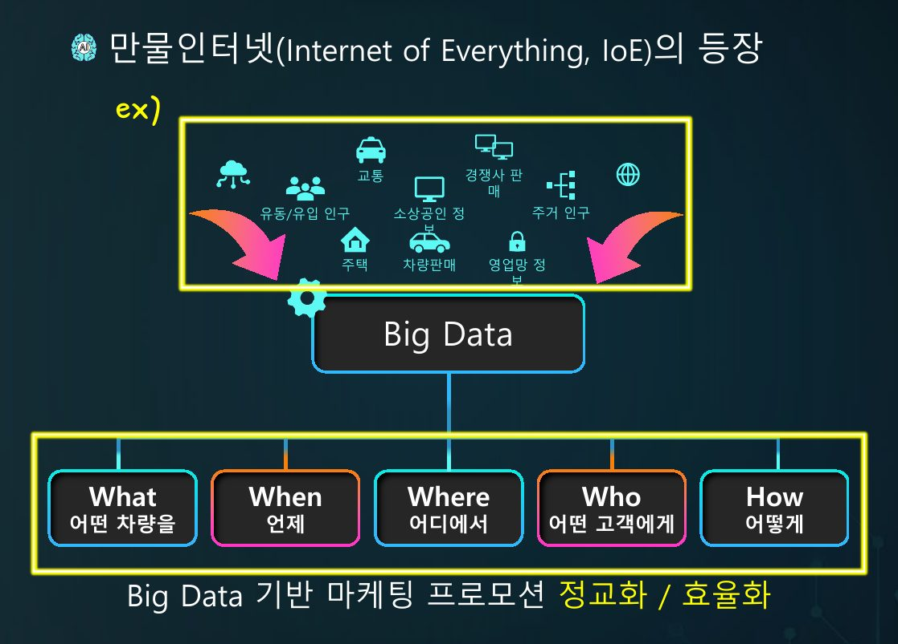
IoE 예시 — 여러 정보를 빅데이터로 모아 5W1H(What·When·Where·Who·How)로 결정
인터넷 연결 기기 수: 230억 → 500억으로 증가 → 센서를 통한 다양한 정보 수집 → Big Data 활용·처리가 중요.
빅데이터 처리를 가능하게 한 기술
기술
의미
교안 포인트
클라우드 컴퓨팅
사용자의 직접 관리 없이 저장공간·컴퓨팅 자원을 필요 시 바로 제공
과거엔 컴퓨팅 파워 부족으로 ML 개발에 한계 → 성능 발전 + 클라우드 등장으로 대규모 ML 개발. ML 개발환경을 클라우드에서 제공, 병렬처리 가능한 GPU 활용 → "AI 대중화를 이끈 퍼블릭 클라우드"
머신러닝
빅데이터를 바탕으로 컴퓨터가 스스로 경험적인 알고리즘을 만드는 기술
클라우드와 결합해 발전
딥러닝
빅데이터 + 강력한 컴퓨팅파워로 괄목할 성과
GPT-3 1,750억 개, HyperCLOVA 2,040억 개 파라미터
엣지 컴퓨팅
데이터가 생기는 기기 가까이에서 처리
실시간 빅데이터 처리에 효과적
자율주행: 인지·판단·제어에 AI 적용, 탑승자의 안전·편의·정보·엔터테인먼트 제공. Level 2 = 2개 이상의 특정 자동화 시스템으로 속도·조향·주차 보조·장애물 회피 제어.
암기팁 숫자 짝 외우기
GPT-3 1750 < HyperCLOVA 2040 — 한국산(네이버)이 더 크다. 기기 수는 230억 → 500억.
1-2. 인공지능의 역사
AI는 최신 기술처럼 보이지만 1950년대부터 꾸준히 발전해 온 오래된 기술이며, 4차 산업혁명의 핵심 기술입니다.
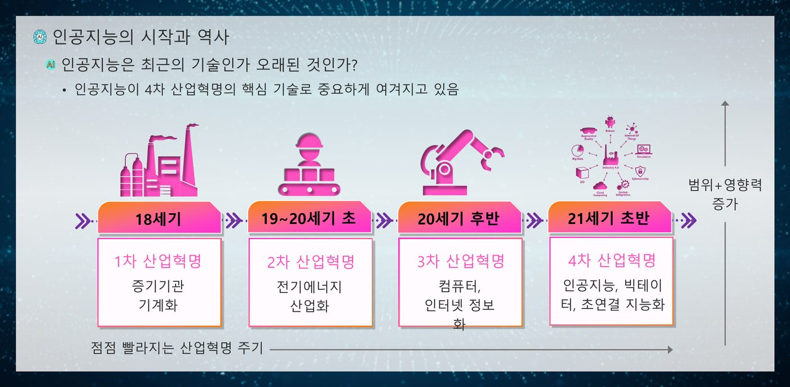
산업혁명 1~4차 — 주기는 점점 빨라지고 범위·영향력은 커진다
산업혁명
시기
핵심
1차
18세기
증기기관, 기계화
2차
19~20세기 초
전기에너지, 산업화
3차
20세기 후반
컴퓨터·인터넷, 정보화
4차
21세기 초반
AI·빅데이터·초연결, 지능화
AI 역사 7단계 — 기대가 오르내리는 "롤러코스터"로 기억하기 (직접 그린 도식)
기간
구분
주요 내용
1943~1956
준비기
맥컬럭과 피츠: 신경세포를 명제 논리(AND·OR·NOT)로 모델링 / 앨런 튜링: 튜링 테스트 / 프린츠: 최초의 체스 프로그램
1956~1974
요람기
다트머스 회의(1956)에서 '인공지능' 이름 탄생(10명의 과학자) / 로젠블럿: 마크 I 퍼셉트론(문자 인식, 대중의 환호) / 매카시: Lisp / 바이젠바움: ELIZA / 전문가 시스템 DENDRAL / 민스키·페퍼트: 『퍼셉트론즈』 출간(단층은 OK, 다층 학습은 문제)
1974~1980
1차 겨울
지나친 낙관과 기대에 대한 실망(사이먼과 뉴웰). 『퍼셉트론즈』 이후 신경망 쇠퇴, 미국·영국 연구 기금 급감
1980~1987
발전기
DEC사 전문가 시스템 XCON / 일본 제5세대 컴퓨터 프로젝트 / 러멜하트 등: 다층 퍼셉트론 + 역전파로 신경망 부활(문자·영상 인식에 기여)
1987~1993
2차 겨울
다층 퍼셉트론의 제한적 성능 + 느린 컴퓨터 / 미국 300개 이상 AI 시장 붕괴 / 미 국방성(DARPA) 연구 기금 고갈 / 신경망 관심 저하
1993~2011
안정기
지능형 에이전트 연구, ML 도입 / IBM 딥블루 체스 챔피언 / 2006 힌튼의 딥러닝 학습 알고리즘 / 2011 IBM 왓슨 퀴즈쇼 우승
2011~현재
부흥기
2012 구글·앤드류 응 고양이 인식(심층신경망, 10억 개 이상 연결) / 힌튼: 딥러닝 기반 ImageNet / 2014 페이스북 딥페이스 / 2016 알파고 vs 이세돌 승 / 2021 하이퍼클로바(네이버)·알파폴드2 / 2023 자율주행 레벨4 서비스 예정
암기팁 7단계 순서 외우기 — "준·요·겨·발·겨·안·부"
준비 → 요람 → 겨울 → 발전 → 겨울 → 안정 → 부흥. 경계 연도는 43·56·74·80·87·93·11 — "사삼 오육 칠사 팔공 팔칠 구삼 일일"로 리듬 붙여 읽기. 겨울은 각각 6년(74~80), 6년(87~93)으로 길이가 같다.
신경망 연표 (5·6주차에도 반복)
1957 퍼셉트론·문자인식→1969 단층의 한계(XOR)→약 15년 침체→1986 역전파→1990년대 기울기 소멸·과적합→2006 힌튼 딥러닝→2012 ILSVRC 1위
2012 ILSVRC(세계 최대 이미지 인식 대회): 오류율 15% vs 나머지 팀 26%로 압도적 1위.
영문 타임라인 슬라이드: 1950 Turing test → 1973 First AI winter → 1980 Boom times → 1988 Second AI winter → 2012 Deep learning revolution.
암기팁 신경망 연도 — "57·69·86·06·12"
"오칠(57) 퍼셉트론이 육구(69)에 막히고, 팔육(86)에 역전(파)하고, 공육(06)에 딥하게, 일이(12)에 1등". 1969→1986 사이가 "약 15년 침체기"(정확히는 17년이지만 교안 표현 그대로).
AI의 발전 — 창작 분야 예시
예술: AI 창작물의 저작권은 누구에게? / "창의성은 인간의 특권"이라는 논쟁.
시: AI가 쓴 시 = '컴퓨터 시(Computer poem)'. 구문에 맞게 + 의미가 통하게 써야 함 — "빵이 강아지를 먹는다"는 구문은 맞지만 의미가 안 통해 글로 부적합.
소설: 일본 소설 1000여 편으로 문장 만드는 법을 학습 → 문학상 1차 심사 통과. 반대쪽은 AI의 창의적 감성 표현이 어렵다고 판단.
그림: 「에드몽 드 벨라미」(서명 대신 알고리즘 수식), 딥드림(이미지 분위기를 바꿔 줌). 음악: AI 작곡가의 K-pop·팝송.
언론사
로봇기자
활동
포브스
퀼(Quill)
증권 시황·스포츠 경기 결과 기사
AP통신
워드스미스
1분기당 4,300여 개 기업 실적 기사
LA타임스
퀘이크봇
지진 정보 자동 수집·기사
가디언
자체 로봇
주간지 'The Long Good Read' 편집
로이터
트레이서
소셜미디어를 이용한 속보
아사히 신문
오토리
고교야구 경기평가 기사
암기팁 로봇기자 짝 맞추기
퀘이크(Quake=지진)봇 → LA타임스 지진 / 트레이서(추적자) → 로이터 SNS 속보 추적 / 워드스미스(말 대장장이) → AP 대량 실적 기사 / 퀼(깃펜) → 포브스.
1-3. 인공지능 시스템
연도
이름
사건
특징
1957
마크 I 퍼셉트론
최초로 문자인식
로젠블럿, 최초의 신경망 학습 모델
1976
마이신(MYCIN)
최초의 전문가 시스템
스탠퍼드대, 전염성 혈액질환 진단·처방
1997
딥 블루
세계 체스 챔피언(카스파로프에게 승)
IBM 슈퍼컴퓨터, 체스 전용 규칙기반 전문가 시스템. 마이크로프로세서 32개 + 체스 칩 512개, 인터넷 생중계
2010
왓슨
퀴즈쇼(제퍼디) 챔피언(2011 우승)
IBM, 다양한 지식의 퀴즈 전문가 시스템, 논리적 판단에 따른 추론, 계속 업데이트
2016
알파고
세계 바둑 챔피언(이세돌)
구글, 딥러닝 기법의 신경망 학습
2021
알파폴드 2
단백질 구조예측
딥러닝 기반 모델
시험 포인트 딥블루 vs 알파고 — 방식이 다르다!
딥블루 = 규칙기반 전문가 시스템, 알파고 = 딥러닝(신경망 학습). 알파고 성공 요인 = 빅데이터 + 딥러닝 + 컴퓨팅 파워(AI 소프트웨어와 하드웨어의 결합).
알파고 숫자: 바둑판 약 3,000만 개를, 사람으로 치면 약 1,000년 걸릴 양을 2년 만에 학습. 구글 데이터센터 클라우드 — CPU 1,202개, GPU 176개. 바둑은 경우의 수가 너무 많아 최적의 수를 계산하는 것이 불가능.
알파폴드 2: 기존 방식(엑스선 결정학, 극저온 현미경)의 단백질 접힘 연구 난점을 빅데이터와 딥러닝으로 돌파. 짧은 시간에 인간 과학자 수준 정확도 → 신약 개발 혁명 전망.
암기팁 대표 시스템 순서 — "마·마·딥·왓·알·알"
마크I(57) → 마이신(76) → 딥블루(97) → 왓슨(10) → 알파고(16) → 알파폴드2(21). 알파고 숫자는 "3천만 판, 천 년 치를 2년에, CPU 1202·GPU 176".
앨런 튜링과 튜링 테스트
튜링: 영국의 수학자·암호학자·컴퓨터 과학자, 컴퓨터 과학의 아버지. 튜링 머신은 폰 노이만 컴퓨터 구조의 기반. 영화 「이미테이션 게임」의 실제 주인공.
튜링 테스트: "기계는 생각할 수 있다" — 얼마나 인간과 비슷하게 대화하는지로 기계의 지능을 판단. 사람 A, 컴퓨터 B, 평가자 C 구조에서 평가자가 기계인지 사람인지 눈치채지 못할 확률이 높을수록 성능이 높다.
튜링상(AI 분야)
수상자
1969
민스키
1971
매카시
1975
뉴웰과 사이먼
1994
파이겐바움
2018
힌튼, 벤지오, 르쿤
암기팁 튜링상 순서 — "민·매·뉴사·파·힌벤르"
연도는 69·71·75·94·18. 2018년 3인방(힌튼·벤지오·르쿤)은 6주차 "딥러닝 배경"에도 다시 나옴.
예시 구글 AI 데모(2018) — 미용실 예약
AI가 직접 전화: "3일 여성 헤어컷 가능한가요?" → "언제쯤요?" → "정오요." → "정오는 안 되고 가장 이른 시간이 1시 15분이네요." → "오전 10~12시는요?" → "단순 헤어컷이면 10시 가능, 예약자 이름은?" → "리사예요." — 사람이 기계인 줄 모를 정도의 대화.
AI 비서: 구글 어시스턴트(2016 발표), MS 코타나(윈도우 PC·모바일용, 한국어 미지원이 단점), 애플 시리(iOS, 개인 비서), 페이스북 챗봇, 아마존 알렉사, 삼성 빅스비(시리와 유사). 영화 「그녀(Her)」처럼 튜링 테스트를 가뿐히 통과하는 AI를 기대.
① 센서로 방에 사람이 있는지 감지해 작동·종료 ② 가동 중 24도로 내려가면 종료 ③ 사람이 있고 25도 이상이면 자동 작동 ④ 주인이 아파트 정문 통과 시 25도 이상이면 미리 작동
(초기 세팅) 24도면 종료, 25도면 작동 + 수동조작한 경우(데이터)를 바탕으로 사용자별 최적온도 설정
포인트
사람이 정해 준 규칙대로만 동작
학습을 통해 특정 사용자에 맞는 최적온도로 동작
예시 빵 추천 시스템 (시험 단골)
구매 이력:
날짜
A씨
B씨
C씨
8월 28일
시나몬롤 2개
8월 31일
식빵
9월 1일
우유, 멜론 빵
우유
우유, 팥 빵
빵 정보: 달지 않은 빵 = 햄버거빵·소시지빵·식빵 / 단 빵 = 초코칩빵·멜론빵·딸기잼빵 (시나몬롤은 목록에 없음!)
방법
내용
평가
방법1
B씨의 직전 구매이력을 보고 이번 구매에서 빠진 것을 추천(식빵)
단순 비교 → Non-AI
방법2
빵 정보와 구매이력으로 달거나 달지 않은 빵을 추천
알려주지 않은 정보(시나몬롤)는 활용 못 함
방법3
시나몬롤을 산 다른 사람들(S·T·U씨)의 구매 이력으로 판단
알려준 것 이상 처리 → 인공지능
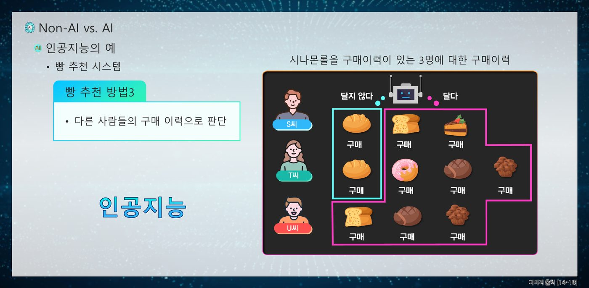
빵 추천 방법3 — 시나몬롤을 산 S·T·U씨가 함께 산 빵을 보고 '단 빵' 쪽으로 판단
암기팁 빵 추천 3단계 = "빠진 것 → 단/안단 → 남들 보고"
방법 번호가 올라갈수록 아는 것 이상을 처리한다. 방법2의 약점은 "시나몬롤을 모른다", 방법3이 그걸 다른 사람 데이터로 해결 → AI.
2-2. 머신러닝이란
규칙기반 시스템(Rule-based System)
정교하게 설계된 Rule(Hand-designed program)에 따라 결과 출력: Input → Hand-designed program → Output. 모든 과정을 사람이 직접 구성.
그래도 알려준 것 이상을 처리하는 기능이 내재 → AI에 속함.
예시 동물 판별 시스템
입력 "치타는 포유류인가?" / 프로그램 "토끼는 포유류인가?, 육식동물인가?, 몸집이 사람보다 큰가?…" / 출력 YES. 치타가 포유류라는 정보가 없더라도 추론으로 기존 정보에서 결론 → 추론을 통해 가르쳐 주지 않은 질문에 답함.
전문가 시스템 = 전문가의 사고 시스템을 질서정연한 프로그램으로 바꾼 것 = 추론엔진 + 지식베이스.
머신러닝(ML)
아서 새무얼이 처음 정의. 컴퓨터 프로그램이 데이터로부터 학습, 경험으로부터 지식을 학습.
Classic ML 기준: 사람이 데이터의 특징을 결정하지만, 이후 과정은 컴퓨터가 스스로 진행.
종류
뜻
교안 예시
지도학습
답이 있는 학습
신문기사를 구별하는 모델(기사마다 정답 분야 제공)
비지도학습
같은 답이 없는 학습
어떤 속성인지 잘 모르는 신문기사 데이터로 학습
강화학습
행동의 시행착오, 보상을 최대화하는 방향으로 행위 강화
자전거 타기
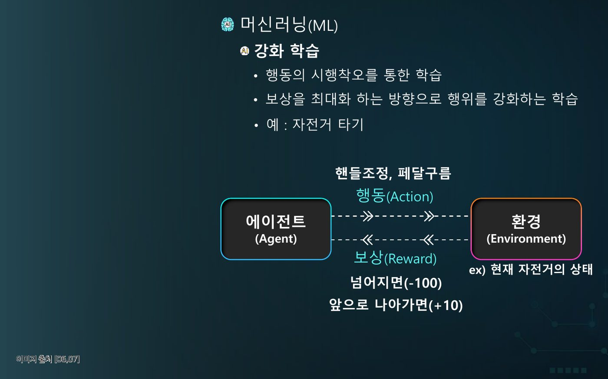
강화학습 자전거 예시 — 에이전트·행동·환경·보상(+10 / −100)
Classic ML (= 표현학습이 아닌 ML)
Input→Hand-designed features (사람)→Mapping from features (컴퓨터)→Output
예시 토끼와 고양이 구별 (2·4·5·6주차에 반복되는 핵심 예시)
토끼 사진 1,000장, 고양이 사진 1,000장 준비
사람이 구별에 가장 좋은 특징을 결정 → 꼬리의 길이, 귀의 크기 (고양이: 꼬리가 길고 귀가 작음 / 토끼: 귀가 크고 꼬리가 짧음)
가로축 귀의 크기 × 세로축 꼬리의 길이 평면에 찍으면 두 무리로 나뉨 → 경계선은 컴퓨터가 결정(Mapping)
새 사진 → 특징 추출(꼬리길이 00cm, 귀크기 00cm) → 경계선 어느 쪽인지로 판정
예시 — 사람 얼굴 인식(Classic ML): 사람이 특징을 정하되 PCA(메인 성분이 있는 특징 벡터를 추출하는 알고리즘) 활용. 각 얼굴 비트맵을 K²차원 벡터로 펼쳐 행렬(K²×N)로 만들고, PCA로 m개의 고유벡터(K²×m)를 뽑음 → 적절한 경계선은 컴퓨터가 결정.
2-3. 딥러닝이란
표현학습(Representation Learning): 데이터로부터 특징(feature)을 스스로 추출하여 학습 — 모든 과정에 컴퓨터가 관여.
방식
흐름
특징을 정하는 주체
규칙 기반
Input → Hand-designed program → Output
사람이 모든 것을 디자인·규칙 마련
클래식 ML
Input → Hand-designed features → Mapping → Output
사람이 지정
표현학습
Input → Features → Mapping → Output
컴퓨터가 결정
딥러닝
Input → Simple features → Additional layers of more abstract features → Mapping → Output
컴퓨터가 여러 층으로 고차원 특성 추출
인공신경망: 크고 다루기 어려운 데이터의 특징을 모델링하는 데 뛰어남 → 표현학습에 가장 적합한 구조. 생물학의 신경망에서 영감.
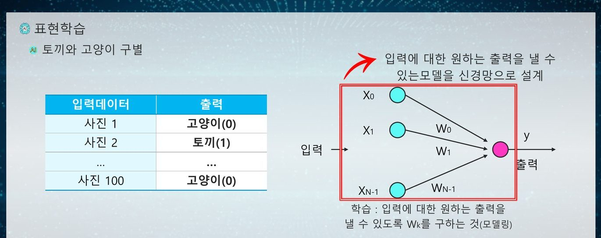
표현학습 버전의 토끼·고양이 — 학습 = 원하는 출력이 나오도록 가중치 Wₖ를 구하는 것(모델링)
사진1 → 고양이(0), 사진2 → 토끼(1), … 사진100 → 고양이(0). 학습 = 입력에 대해 원하는 출력이 나오도록 Wₖ를 구하는 것. 완성된 모델은 미지의 데이터(테스트 사진)의 출력을 얻는 데 사용.
예시 손글씨 숫자 2 판별 (simple autoencoder)
숫자 2 손글씨 100장으로 입력과 출력이 비슷하게 나오도록 신경망을 학습. 사용할 때 입출력 차이가 매우 작으면 → 숫자 2, 매우 크면 → 2가 아님(숫자 3, 판독불가 이미지). 판별 '기준'은 경험적으로 정하지만 특징 추출은 컴퓨터가 함.
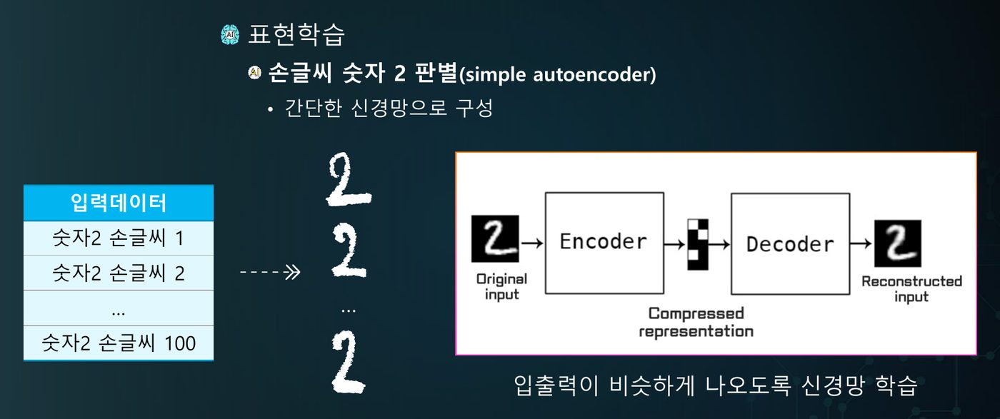
오토인코더 — Encoder로 압축했다가 Decoder로 복원, 복원 오차로 '2인지' 판정
딥러닝
고차원 특성(high-level feature)을 스스로 추출하여 학습. ML의 한 분야로, 기본 파라미터를 설정하고 컴퓨터가 여러 처리 계층으로 패턴을 인식하며 스스로 학습. 연속된 layer에서 점진적으로 의미 있는 표현을 배우는 데 강점.
다층 구조의 장점: 결정경계를 더 자유롭게(비선형) 구축 → 복잡한 분류 문제의 정확도 향상.
예시 — 사람 얼굴 인식(딥러닝): Hidden layer 1(국소적 명암 패턴, Patterns of Local Contrast) → Hidden layer 2(눈·코 같은 Face Features) → Output(얼굴). 층이 깊어질수록 추상적.
셀프 체크 2주차 셀프 체크
좁은 AI의 다른 이름과 예시 3개는?
약한 AI / 알파고, 자율주행자동차, 시리
AI·ML·DL 관계를 분류하는 목적은?
AI 요소기술을 더 잘 이해하기 위함(분류 자체가 목적 아님) — 치타 비교 예시
'AI but not ML'의 예시와 'ML but not 표현학습'의 예시는?
규칙기반·전문가 시스템(지식기반) / Logistic regression
똑똑한 에어컨 2가 AI인 이유는?
사용자의 수동조작 데이터로 학습해 사용자별 최적온도를 설정
빵 추천 방법2의 한계는?
알려주지 않은 정보(시나몬롤)는 활용 못 함
빵 추천 방법3은 무엇으로 판단하나?
시나몬롤을 산 다른 사람들의 구매 이력
Classic ML에서 사람이 하는 일과 컴퓨터가 하는 일은?
사람: 특징 결정(꼬리 길이·귀 크기) / 컴퓨터: 경계선 결정(Mapping)
오토인코더로 숫자 2를 판별하는 기준은?
입출력 차이가 매우 작으면 2, 매우 크면 2가 아님
표현학습과 Classic ML의 차이는?
특징을 사람이 지정(Classic) vs 컴퓨터가 결정(표현학습)
3주차 — 지식기반시스템, 지식표현과 추론, 전문가 시스템
3-1. 지식과 지식기반시스템
구분
정의
핵심
Non-AI
단순계산, 단순한 프로그래밍
알려진 정보만 활용
AI
스스로 생각하고 판단하는 컴퓨터
알려진 것 이상 처리
ML
데이터로부터 학습하는 과정
경험으로부터 지식 학습
Q. 규칙기반 시스템은 인공지능인가? → 예(AI but not ML).
예시 "A씨는 우유를 좋아하나요?" — 기술마다 답이 다르다
확보된 사실: ① A씨가 빵을 좋아한다 ② A씨가 그동안 먹은 음식 데이터 ③ 빵을 좋아하는 사람은 우유도 좋아한다.
기술
답
이유
Non-AI
"모른다"
알려준 것 이상의 정보 활용 불가
Rule-based AI
"그렇다"
스스로 판단 — 프로그램이 연역추론(①+③), 알려준 것 이상 처리
Machine Learning
"그렇다"
데이터 접근(②) + 학습(식사 행동 패턴 분석)
암기팁 "모·그·그" + 근거가 다르다
Non-AI는 모른다, 규칙기반과 ML은 둘 다 그렇다. 단 규칙기반은 규칙(③)으로 연역, ML은 데이터(②)로 학습해서 같은 답에 도달한다.
비교 포인트
Non-AI vs Rule-based AI: Rule-based가 더 우수(알려주지 않은 사실도 출력). Q. 그럼 Non-AI는 필요 없나? → 실제로는 '아주 심플한 기능'이 많이 필요해서 여전히 필요.
Rule-based AI vs ML: 평균적 성능은 ML이 더 우수(데이터를 쓰기 때문). Rule-based는 문제가 복잡해지고 데이터가 늘면 시스템 복잡도가 증가하는 한계.
복잡한 문제 → 데이터 기반이 더 좋은 접근. 복잡한 문제해결 ≈ 인간의 문제해결 → Big Data 기반 성과로 AI가 각광.
단, Robust(강건한) 시스템에는 '사실에 근거한 추론'을 쓰는 Rule-based AI가 적합.
데이터 → 정보 → 지식
단계
뜻
교안 예시
데이터
사실, 활용가치 낮음
"빨간색, 7시30분, 5명"
정보
데이터가 모여 만든 의미
"사거리의 신호등이 빨간색으로 바뀌었다"
지식
추론을 위한 기본 정보
"방금 내 차 앞의 신호등이 빨간색으로 바뀌었으므로 멈춰야 한다"
데이터—처리→정보—일반화·정렬→지식→정형화된 지식 + 추론→문제 해결·의사 결정
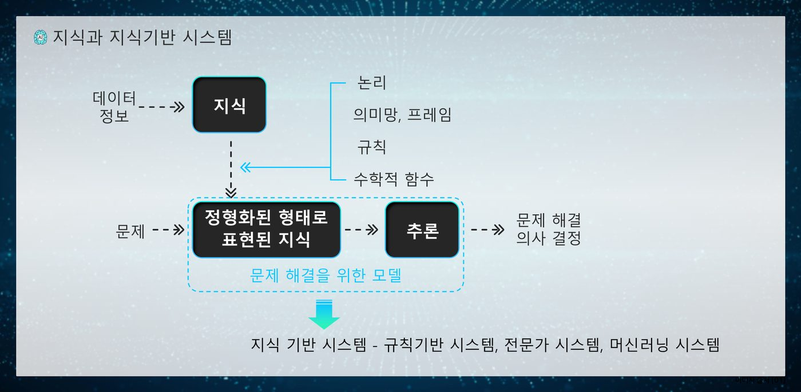
지식기반 시스템 — 지식을 논리·의미망·프레임·규칙·수학적 함수로 정형화한 뒤 추론
지식 표현 형태
대응 시스템
논리, 의미망, 프레임, 규칙(그래프)
규칙기반 시스템, 전문가 시스템
수학적 함수
머신러닝 시스템
3-2. 지식표현과 추론
① 논리
말로 표현된 문장의 타당한 추론을 위한 것. 기호로 문장 표현, 참·거짓 판정.
명제 논리: 참·거짓을 분명히 판정할 수 있는 문장(명제). 예: p = "알렉산더는 아시아를 넘본다", q = "징기스칸은 유럽을 넘본다".
p
q
~p (부정)
p∨q (논리합)
p∧q (논리곱)
T
T
F
T
T
T
F
F
T
F
F
T
T
T
F
F
F
T
F
F
술어 논리: 대상의 속성이나 대상 간 관계를 함수 형태로. 예: Student(John), Friend(John, Mary).
Q. 활성함수를 왜 바꾸나? → 시그모이드로는 backpropagation 시 앞쪽 층의 weight 업데이트가 되지 않음.
드롭아웃: 일정 확률로 노드를 무작위 선택해, 선택된 노드의 앞뒤 연결선은 없는 것으로 간주하고 학습. 반복학습으로 결국 모든 weight가 업데이트됨.
Hidden layer가 많이 늘어난 신경망의 다른 이름: Feed Forward NN, Fully connected NN, Deep Neural Network.
암기팁 문제 ↔ 해결책 짝 "기울기엔 ReLU, 과적합엔 드·규·배"
기울기 소멸 → ReLU 한 개. 과적합 → 드롭아웃·규제화·배치정규화 세 개.
신경망(다층 퍼셉트론)
심층신경망
은닉층 개수
통상 1~2개
1개 이상 1,000개까지
알고리즘
역전파 알고리즘
딥러닝 알고리즘
주요 이용 시대
1986년 이후
2006년 이후
사용하는 데이터
학습용 데이터 정도
대규모 데이터
이론상 수행 시간
실행 시간이 많이 걸림
은닉층이 많아 훨씬 많이 걸림
프로세서 속도
당시 상대적으로 느림
최근에 크게 빨라짐
병렬처리
당시 NCUBE/10 등 병렬 슈퍼컴퓨터를 썼으나 큰 성과 없음
수많은 고속 프로세서를 병렬로 연결해 빠르게 사용
머신러닝
딥러닝
데이터 크기
작은 데이터 집합에 좋은 결과
매우 큰 데이터 집합에 좋은 결과
처리하는 컴퓨터
학습 시간이 짧아 일반 컴퓨터
오래 걸리므로 강력한 컴퓨터
특징 추출
최상의 결과를 위해 여러 특징 추출·분류 방법 시도
특징 추출과 분류가 자동
처리 시간
몇 분~몇 시간
경우에 따라 몇 주까지
알고리즘 종류
다양하고 많음
현재는 적으나 많이 개발 중
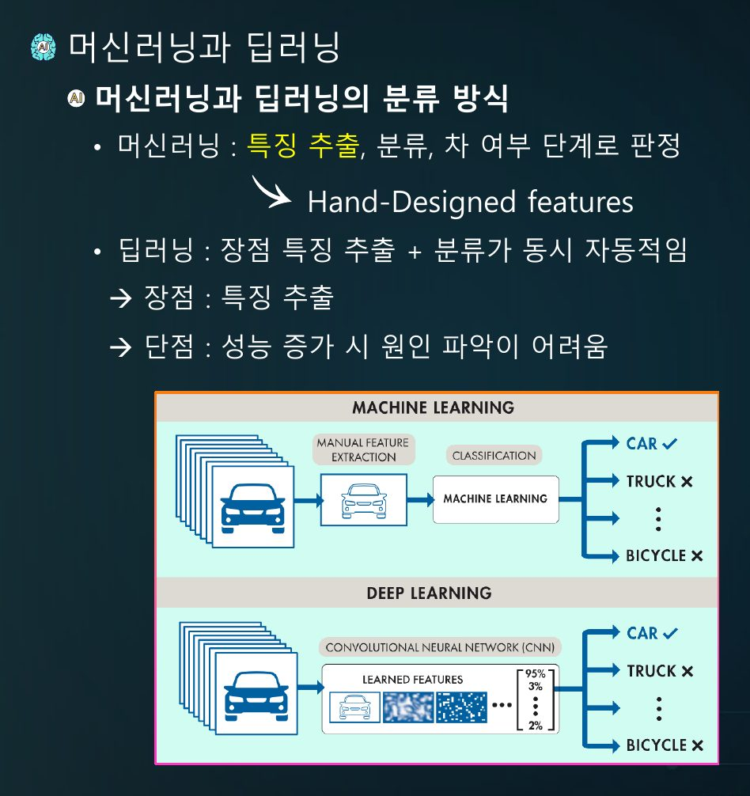
머신러닝(수동 특징 추출 → 분류) vs 딥러닝(CNN이 특징 추출 + 분류를 한 번에)
분류 방식: ML = 특징 추출(Hand-Designed features) → 분류 → 차(CAR) 여부 단계로 판정 / DL = 특징 추출 + 분류가 동시에 자동. DL의 장점 = 특징 추출, 단점 = 성능이 좋아져도 원인 파악이 어려움(→ 7주차 XAI로 연결).
6-2. 심층신경망 개요
딥러닝에서도 컴퓨터가 데이터로부터 Features를 추출하고 원하는 결과가 나오도록 Wₖ, bₖ를 구함.
학습시간은 오래 걸리지만 복잡한 데이터에서 효과적으로 특징 추출 → 컴퓨터비전, 자연어처리, 음성신호처리.
Q. 딥러닝이 항상 좋은가? → 아니다. 문제에 따라 적절한 방법 선택. 정형화된 데이터는 클래식 ML(예: 배깅, 부스팅)이 적합.
데이터 양에 따른 성능: 데이터가 적으면 전통적 ML이 성능을 내고, 데이터가 많아질수록 신경망 → 딥러닝 순으로 성능이 계속 오름. 영상·음성 인식에서 각광, 많은 데이터 필요.
딥러닝의 정확도가 높은 이유
예시 "사과를 표현해 보세요"
색상 빨강, 모양 둥근, 잎사귀 있음, 미세한 점 있음, 세포 표면 반짝반짝, 꼭지 있음… 그래도 다 말 못 함 → 인식의 해상도가 언어의 해상도보다 크다. 딥러닝은 layer별로 다양한 표현을 포착하고 추상화(Abstraction) → 인식의 해상도를 포착.
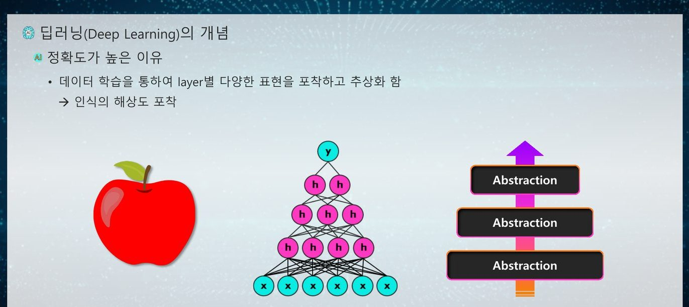
층을 올라갈수록 Abstraction — 인식의 해상도를 포착
사과와 배 구별 같은 특정 분야에서는 딥러닝 정확도가 사람 수준을 넘기도 함.
DNN이 특징을 인식하는 방법: Input → Simple features → Additional layers of more abstract features → Mapping → Output. 많은 Simple Features로 복잡한 특징을 표현 — 신경망 구조가 깊기 때문에 가능. 은닉층이 많을수록 다양한 표현 포착.
예시 물고기(흰동가리) 인식에 가장 큰 영향을 끼친 학습 데이터는?
일반 ML(SVM)은 물고기와 상관없는(색감만 비슷한) 이미지를 꼽았고, 딥러닝(GoogleNet)은 실제 흰동가리 이미지를 꼽음 → 딥러닝이 더 본질적인 특징을 학습.
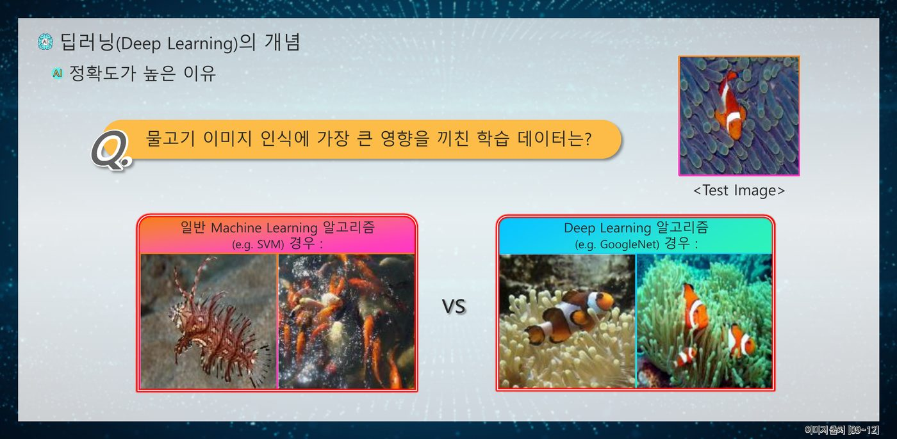
Test Image(흰동가리)에 대해 SVM과 GoogleNet이 '가장 영향을 준 학습 데이터'로 고른 이미지 비교
개념: 대량의 데이터를 처리하는 여러 학문이 관련된 학문. 엄청난 양의 데이터를 수집·저장·분석·처리. 데이터를 다루는 방법론·프로세스·알고리즘·시스템을 효율적으로 관리·분석하는 학문적 바탕, 데이터에 대한 직관력을 획득하게 해주는 분야.
구성: 통계 + 과학적 방법 + AI + 데이터 분석. 데이터 사이언티스트 = 데이터 사이언스를 실천하는 사람.
기업에 혁신적 통찰력 제공 — 비즈니스 분석가에게 의존하는 대신 방대한 데이터에서 학습.
영역과 위치 = 3가지 영역의 결합: 컴퓨터 사이언스 · 통계적 수학 · 비즈니스 (컴퓨터+수학 = 머신러닝, 수학+비즈니스 = 분석, 컴퓨터+비즈니스 = 소프트웨어 개발, 셋의 교집합 = 데이터 사이언스).
중요성이 커지는 이유: 빠르고 널리 보급된 컴퓨터, 인터넷의 풍부하고 다양한 데이터, ML로 빠르고 편리한 구현. 응용: 경영·AI·사회학·의학·생물학·인문학 등.
탐구 영역: 과학적 방법론·가시화·통계적 모델링·통계적 컴퓨팅·데이터 기술·데이터 연구·데이터 컨설팅·실세계 응용.
비즈니스에의 접목 — 데이터 기반 의사결정: 의사 결정 향상, 경영상 문제 개선, 미래 예측, 경영 목표 개선, 새로운 기회 창출, 위험 평가 향상.
예
데이터 분석
결과
1
콜센터 데이터
고객 이탈 파악 → 조치
2
물류 회사: 교통 패턴, 기상 조건
배송 속도 개선·비용 절감
3
의료 검사 데이터, 보고된 증상
환자 진단 개선
4
장비 고장 예측
공급망 최적화
5
비정상적 행동 인식
금융 서비스 사기 탐지
6
이전 구매기록
고객 추천 → 매출 향상
필요한 지식과 기술: 인터넷으로 데이터를 효율적으로 수집하는 컴퓨터 지식, 대규모 데이터 프로그래밍, 통계처리 기초, 분류·클러스터링 등 ML, 결과 시각화.
데이터 과학자(Data Scientist)
통계·프로그래밍·ML로 과거 분석과 미래 예측에 쓰일 패턴을 찾음. 데이터 수집·분석·결과 보고. 통계 분석·데이터 마이닝 분야에서 성장, 상당한 전문성 필요.
임무: 분석 전략 개발, 분석용 데이터 준비, 탐색, 분석·시각화, Python·R로 모델 구축, 애플리케이션에 모델 배포.
협업: 비즈니스 분석가, 데이터 엔지니어, IT 설계자, 애플리케이션 개발자.
예시 자동차 비유
데이터 분석가 = 자동차 수리공 / 머신러닝 개발자 = 엔진 개발자 / 데이터 사이언티스트 = 자동차 설계 및 디자이너 → 문제에 맞는 모델링 후 통계학·시뮬레이션·ML을 적절히 조합해 실제로 구현하는 능력.
광고 분야: 데이터 분석가는 유저의 연령·성별·지역 등으로 상호 연관관계 파악 / ML 개발자는 관계 있는 변수를 TensorFlow에 얹어 매칭율 높은 유저에게 적절한 광고를 노출하는 시스템 개발.
역량: 분석가·개발자의 역량, 변수가 될 데이터 가공 능력, 다양한 테스트로 적절한 변수 발견.
수요(The State of the Data Scientist): 주요 기술 1.Data Analysis 2.R 3.Python 4.Data Mining 5.Machine Learning / 학력 석사 42%·박사 38%·학사 20% / 전공 1.컴퓨터과학 2.경영 3.통계 4.수학 5.물리 / 최근 4년 2배 성장.
데이터 사이언스와 AI: AI는 전통 통계학을 바탕으로 데이터 기반 추론·검증·예측. AI 이전엔 빅데이터 분석·데이터 마이닝 → 데이터 사이언스의 AI는 데이터 사이언스에 기반. AI 전문가는 데이터 사이언스 내부에 위치, ML·DL로 복잡한 추론·예측·검증, SOTA 문제해결에 포커스.
9-2. 데이터의 수집, 관리, 분석
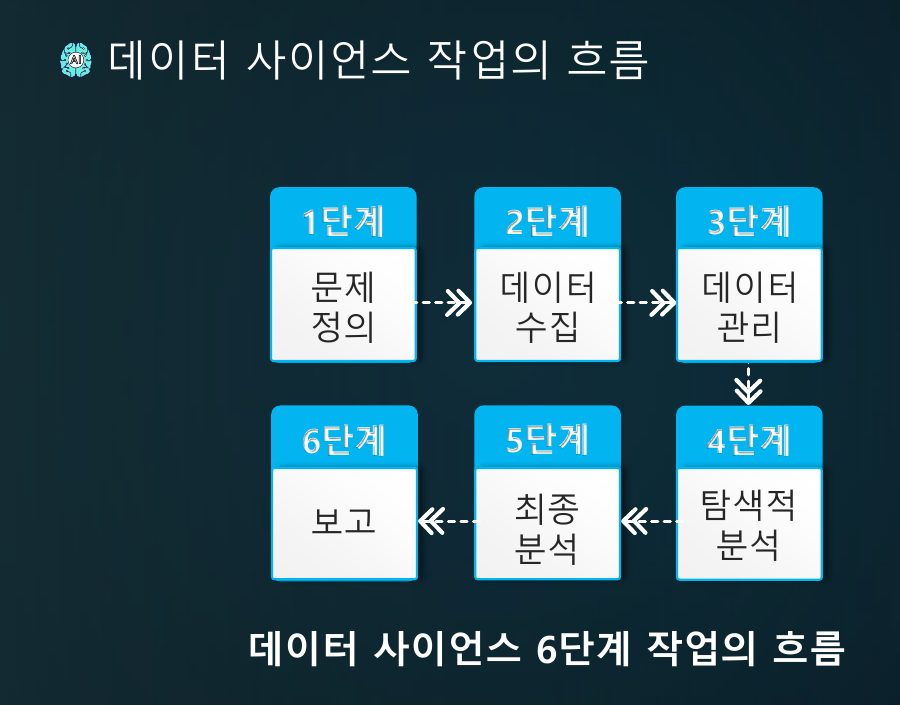
데이터 사이언스 6단계 작업의 흐름
단계
핵심 내용
1. 문제 정의
명확한 문제 정의와 목표값 설정, 수요자·의뢰자 요구 확인. 중요성이 매우 큼(부정확하면 잘못된 결과). 추상적 아이디어를 구체적으로 → 효율적 워크플로우
2. 데이터 수집
DB·웹에서 수집, 매체로 시장 유용성 조사, 목표 값에 부합하는 데이터. 온라인(인터넷)·오프라인(센서), 수단: 검색·인터뷰·서적·DB
3. 데이터 관리
적절히 저장·관리. 체계화된 데이터는 DB 형태, 섞여 있으면 필요한 것만 분리, 백업
4. 탐색적 분석
패턴을 찾아 탐색적 분석(분류·클러스터링, 통계·ML), 결과를 시각화(그래프·표)
5. 최종 분석
비즈니스 질문에 최종 분석, 체크리스트로 점검, 목표 부합 여부. 기대만큼 안 나오면 → 예측 모델 미세 조정
6. 보고
보고서 작성(시각화 반드시 포함), 팀·의뢰인에게 보고, 필요한 결정 권고
암기팁 6단계 = "문·수·관·탐·최·보"
문제 → 수집 → 관리 → 탐색 → 최종 → 보고. "문수가 관탐하고 최보한다". 시각화는 4단계(탐색 결과)와 6단계(보고서 필수) 두 번 등장.
1단계 질문: 목표는? 구체적으로 무엇을? 어떤 방법으로? / 배경: 배경지식·환경, 기존 해결 방법, 성공적 수행의 판단 기준. (아인슈타인·스티브 잡스도 문제 정의 강조)
2단계 질문: 어떤 데이터·처리가 필요? 누가 얼마 동안 수집? 현재 방법의 개선점은? 중요한 요소는?
시각화 모델 vs 도구: 모델 = 길이·부피·명암·색상 등의 특징 표현 / 도구 = 막대그래프·히스토그램·상관관계 등. 변수 포함 여부, 구간 크기, 그룹화 결정에 도움. 소프트웨어: R, 엑셀, SAS, SPSS, MATLAB.
분류와 클러스터링(데이터 분석 단계)
지도학습 = 분류·회귀 / 비지도학습 = 클러스터링. 클러스터링은 데이터를 유사도에 따라 비슷한 클러스터로 나눔(주요 방법: K-means).
분류의 응용
클러스터링의 응용
영화·음악 추천의 개인별 선호 예측
특정 상품에 대한 고객의 성향·나이·성별·구매력
글자·얼굴 인식 등 컴퓨터 비전
주택의 가치·형태·위치별 그룹화
유방암 등 질병 진단, 유전자 데이터 인식
지진 연구
재정적 위험성 파악·관리
피자 배달 센터 개설: 자주 주문하는 지역 분석 → 가능한 가게 수 → 센터 위치 선정
주식 시장 예측
응급 병원·야간 약국 위치 선정
암기팁 응용 구별법
"누구/무엇인지 맞히기"(추천·인식·진단·위험·주가) = 분류, "어디에 모여 있나"(고객군·주택군·지진대·피자센터·병원 위치) = 클러스터링.
9-3. 빅데이터와 데이터마이닝
AI 발전 3요소 = 빅데이터 + 딥러닝 기술 + 컴퓨팅파워.
데이터 = '4차 산업혁명의 쌀', 빅데이터 = '21세기의 새로운 원유'. IT 영역 10대 핵심기술.
정의: 엄청난 양의 데이터 집합에서 가치 있는 정보를 효율적으로 추출하고 결과를 분석하는 최신 기술(기존에는 DB로 수집·저장·관리·분석).
형태: 정형 + 비정형(사진·동영상·행동 패턴·센서 등 멀티미디어). 저장·분석·인터넷 등과 연관.
활용 예: 차량 센서로 주행 습관 분석, 고객 needs를 신제품에 반영, 햄버거 카드 구매 정보를 경영에 반영.
활용분야: 교통사고 지점·철도·도로·교통, 마케팅, 유전자, 주거·가족, 소셜미디어, 범죄 발생 시간·지역·수법, 교량·건축물, 전파·전력, 기후환경, CCTV, 독거노인·1인 가구, 기상, 홍수·태풍·해일·지진.
문제점: 사생활 침해와 보안. 정보제공 동의 → 추천 정확도↑ but 개인정보 노출. 정체불명의 대출 안내·무차별 광고 → 개인정보보호는 반드시 해결할 과제.
시장 규모: 국내 2023년 14억 달러 추정(출처 기사: 2조 5,692억원 전망). 엄청난 저장 장치 필요.
데이터로부터 통계적 규칙이나 패턴을 찾아내는 과정(통계학·AI·ML 활용), 컴퓨터 사이언스와 통계학의 학제 간 연구, 데이터로부터 지식을 발견하는 분석 과정.
주요 업무: 정보 추출, 감춰진 패턴 발견, 예측 모델 개발. 관계: 데이터 마이닝 ⊂ 데이터 사이언스.
통계학
데이터 마이닝
한정된 개수의 데이터를 추정 또는 검정
대규모 데이터를 분석해 정보 추출, 기업 경영 활동용 분석이 많음, 다양한 산업에 적용되는 표준화 처리 과정 제시
활용: 기업 업무, 불량률을 줄이는 품질관리, 패턴인식을 적용한 의료 진단, 고객 신용을 평가하는 금융 관리.
현재: 데이터 규모 증가, 비정형 멀티미디어 급증, 기법 다양화, ML을 이용한 AI 기법 적용.
미래 전망: 역할 증가, 영역의 명확한 정의, 더 많은 일자리, 교육의 일반화, 발전을 위한 ML 향상.
셀프 체크 9주차 셀프 체크
데이터 사이언스를 이루는 3가지 영역은?
컴퓨터 사이언스, 통계적 수학, 비즈니스
자동차 비유에서 데이터 사이언티스트는?
자동차 설계 및 디자이너
데이터 사이언스 6단계 순서는?
문제 정의 → 데이터 수집 → 데이터 관리 → 탐색적 분석 → 최종 분석 → 보고
최종 분석에서 기대만큼 결과가 안 나오면?
예측 모델을 미세 조정
시각화 모델과 시각화 도구의 차이는?
모델 = 길이·부피·명암·색상 등 특징 표현 / 도구 = 막대그래프·히스토그램·상관관계
피자 배달 센터 위치 선정은 분류·클러스터링 중?
클러스터링
데이터와 빅데이터의 별명은?
4차 산업혁명의 쌀 / 21세기의 새로운 원유
1PB는 몇 Byte?
10¹⁵ Byte
빅데이터 저장 기술은?
하둡(Hadoop)
한국석유공사 사례의 숫자 2개는?
주유소 1,300여 개, 하루 6차례
구글 독감 예보는 무엇을 분석했나?
독감·기침·인플루엔자·오한 등 검색어
통계학과 데이터 마이닝의 차이는?
한정된 데이터의 추정·검정 vs 대규모 데이터 분석·정보 추출
10주차 — AI의 미래와 특이점, 윤리 이슈, 윤리 기준
10-1. 인공지능기술의 미래와 윤리
특이점(Singularity)
기술적 특이점 = AI가 새로운 문명을 만드는 가설적 미래 시점, AI가 인간 능력을 뛰어넘어 새 문명을 만드는 시점. 미래학자들은 AI가 통제 불가능한 수준으로 발달할 것으로 예상.
특이점에서는 지능의 폭발(Intelligence explosion) 발생 = 특이점 가설의 대표 예. 약한 AI → 강한 AI → 슈퍼 AI 중 강한 AI 이상의 슈퍼 AI가 출현하는 시기. AI가 인간 지능보다 더 급격히 발전.
인물
내용
폰 노이만
1958년 현대 개념의 특이점 주장. "인류의 역사가 어떤 필연적인 특이점에 접근하고 있다"
어빙 굿
1965년 '지능의 폭발' 언급, AI를 통한 특이점 개념 구체화. 특이점주의자 = 특이점의 도래를 믿고 지지하는 사람
버너 빈지
「다가오는 기술적 특이점」 논문
레이 커즈와일
미래 예언자·작가·컴퓨터과학자·발명가, MIT 출신, 구글 기술담당 이사, 미국 위대한 혁신발명가 10명 중 1명. 발명: 최초의 이미지 스캐너, 광학문자인식(OCR), 시각장애인용 최초의 음성합성 독서 기계, 그랜드 피아노 소리의 음악 합성기. 『특이점이 온다』(2005) — 2045년에 인간이 AI를 통제할 수 없는 특이점에 도달
스티븐 호킹
"컴퓨터는 AI로 100년 안에 인간을 넘어설 것이다"
유드코우스키
특이점이 1996년부터 시작. 컴퓨터 속도는 2년마다 2배('무어의 법칙'을 AI에 적용), 특이점 이후 AI는 엄청난 속도로 발달
"오팔(58) 노이만이 시작하고, 육오(65) 굿이 '폭발'이라 부르고, 커즈와일이 2005년 책에서 2045년을 찍고, 유드코우스키는 이미 96년에 시작했다고 함." 호킹은 "100년".
지지: 특이점주의자들은 강한 AI를 확신, 인간 대뇌 분석을 통한 인공신경망 구현을 믿음. 「TIME」 커버에서 2045년 특이점 소개.
비판: 강한 AI 구현에 회의적 — 핀커, 캐플런 등, 신학자들(종교적 차원).
학계의 의견 — 스튜어트 러셀(『Artificial Intelligence: A Modern Approach』 저자)
표준적인 모형(Standard model of AI)에 이의 제기: 인간이 부여한 정해진 목표를 기계가 최적화하는 모형 — 목표와 데이터가 주어지면 목표로부터의 오차(오차 제곱, 비용함수)를 최소화하며 학습. 최근엔 보상체계에 의지해 스스로 능력을 높이는 강화학습 모형이 널리 쓰임.
성능지향적 모형으로 특수 용도 AI를 개발하다 보면 초지능 AI가 출현할 수 있음 → "초지능 개발을 목표로 하는 것에 어떤 문제가?" → AI가 자신의 이익을 우선 추구.
인간의 통제를 받도록 설계되지 않은 초지능 AI는 인간의 통제를 완전히 벗어나고, 인간의 시도를 거부·방해할 수 있음 → 표준 모형이야말로 AI 연구의 잘못된 길의 출발점.
챗봇 활용 시 민감한 문제 발생 → AI와 인간의 공존을 위해 AI 윤리 필요.
10-2. 인공지능 윤리이슈
위험성: 무기 시스템에 AI 이용 — 얼굴인식 공격용 자율 드론, 사람 대신 전투하는 로봇군단. 구글: 무기 시스템용 AI 기술 지원 배제 지침.
필요성: AI 관련 문제는 사람이 AI를 어떻게 만들고 사용하는가에 따라 결정 → 개발자·사용자 모두 윤리를 고려. AI 설계 시 윤리적 논리 필수.
서비스 측면 사례
내용
MS 챗봇 '테이'(2016)
트위터 챗봇이 인종·성차별 발언 — 윤리를 고려하지 않은 개발 → 출시 하루 만에 사과·중단 → 이후 AI 원칙(책임·투명성·공정성·신뢰성·개인정보·포용성) 수립
스캐터랩 '이루다'(2020.12 말)
연인 같은 대화, 동성애·장애인·여성 혐오발언 학습, 사용자와 추가 학습으로 비윤리적 언어 학습 → 약 2주 만에 개인정보 유출·혐오 발언으로 중단
자율주행차 트롤리 딜레마
'우버' 자율주행차 사고(2018.3) — "운전자, AI 누구의 책임?" / 신호 위반한 3명 vs 인도의 1명
딥페이크
유명인 얼굴을 음란물에 사용, 대중화되면 정보 매체에 악용, 지인으로 위장한 금전요구
뉴럴링크(일론 머스크)
뇌에 칩 이식 실험을 인간으로 확장 계획. 옵저버에서 윤리학자 수잔 슈나이더 반론. 돼지: 뇌-기계 인터페이스 성공(실시간 신경 신호) / 원숭이: 칩으로 기기 조작 없이 비디오 게임 / 목표는 사람 → 제도적·법적 장치와 AI 윤리 필요
얼굴 학습량 차이
백인과 흑인 얼굴 데이터 학습량 차이 → 인종차별적 이슈
AI 채용 프로그램
남성에 가산점
기타
가짜 나체 사진 텔레그램 딥페이크봇, 성별 식별 AI 성차별로 출시 1주일 만에 종료, 얼굴로 범죄자 예측 AI 학술지에서 배제, 노인을 고려하지 않는 얼굴인식, 위험한 제안을 하는 정신과 챗봇
암기팁 챗봇 사고 비교 "테이 하루, 이루다 2주"
MS 테이(2016) = 하루, 스캐터랩 이루다(2020.12) = 약 2주, 성별 식별 AI = 1주일. 우버 사고 = 2018년 3월.
기술적 측면 — 편향성: 데이터나 개발자가 무의식에 가진 경향·생각이 AI에 그대로 반영되는 현상.
선택 편향(예: 지리적 편향 — "북미에서 생성·라벨링한 데이터로 학습한 AI는 북미 편향")
확인 편향(무의식적으로 자신의 믿음과 일치하는 방향으로 데이터 수집)
사회적 측면 — 개인정보 보호: 개발 명목으로 사적 정보·대화 이용, 챗봇 개발 시 대화정보 수집, 범죄자 검거용 얼굴인식.
AI 윤리가 담아야 할 것: 개발자를 제어하는 규칙·기준, 연구 대상자의 기본 윤리, 연구 과정·내용 조작 금지, 사회적 문제 가능성 고려, 예측 결과의 윤리 문제 판단, 예방적 윤리 의식 함양.
10-3. 인공지능 윤리의 기준
AI 윤리(AI Ethics): AI 관련 이해관계자들이 준수해야 할 보편적 사회 규범 및 관련 기술(과학기술정책연구원, 정책연구 2019-13).
논의의 배경:
범죄 전과자 얼굴로 재범률 예측 → 흑인의 재범율을 실제보다 높게 추론 → AI가 판사를 대체하면 인종차별적 판결 가능
스탠포드대(2017): 데이트 사이트 프로필 사진으로 성적 지향성 추론
AI 학습은 방대한 데이터 기반 통계적 추론 → 소수 집단 데이터는 수집이 어려워 편향 → 이력서 1차 필터링에서 소수집단 차별 → 윤리 제정 필요성 대두
우리나라의 사례
주체
내용
카카오
국내 업계 최초 AI 알고리즘 윤리헌장(2018.01.31) — ① 기본원칙(사회 윤리 안에서 인류의 편익·행복) ② 차별에 대한 경계 ③ 학습 데이터 운영(사회 윤리에 근거해 수집·분석·활용) ④ 알고리즘의 독립성(자의적 훼손 방지) ⑤ 알고리즘에 대한 설명(기업 경쟁력을 훼손하지 않는 범위)
국내 기업(PAI 가입)
국내 기업 최초로 AI 국제 컨소시엄 PAI(Partners on AI) 가입(2018) — 안정성·공정성·투명성·책임성·사회적 영향(의료 안전의 윤리적 결정, 자동화로 인한 직업 소멸 분쟁 방지, 인권 등)
네이버
'Privacy By Design 원칙' — 서비스 출시 단계부터 높은 프라이버시 기준. 보고서: 투명성 보고서(수사기관에 제공한 이용자 정보 통계), 개인정보보호 리포트
정부
'AI 국가전략'(2019.12.17, 대통령 주재 국무회의) — AI 반도체 세계 1위, 전국단위 AI 거점화 / 일자리 안전망 + AI 윤리 정립으로 사람 중심 AI. 역기능 방지: AI 사이버 침해 대응 고도화, 딥페이크 등 범부처 협업, 신뢰성·안정성 품질관리체계, OECD 등 글로벌 규범에 맞는 윤리기준·윤리교육 커리큘럼
방송통신위원회
'이용자 중심의 지능정보서비스 기본 원칙'(2019.11.11) — 7대 원칙: 사람 중심의 서비스 제공, 투명성과 설명가능성, 책임성, 안전성, 차별금지, 참여, 프라이버시와 데이터 거버넌스. 이용자 보호를 위한 공동 노력(자율적 노력, 협의회 운영)
암기팁 국내 연도 정리
카카오 2018.01.31(업계 최초 헌장) → PAI 가입 2018 → 방통위 2019.11.11(빼빼로데이!) → AI 국가전략 2019.12.17 → G20 인간중심 AI 원칙 합의(대한민국 제안) 2019.6. 카카오 5원칙 = "기본·차별·데이터·독립·설명".
AI 윤리 가이드라인 흐름(국제): AI 미래에 관한 준비 → AI 활용 원칙안 → AI 이니셔티브 행정명령(2019.2) → AI 윤리 가이드라인(2019.4) → AI 원칙 권고안 합의(2019.5) → G20 인간중심 AI 원칙 합의(대한민국 제안, 2019.6) → 2020 정부·민간 가이드라인 논의 본격화(인권·프라이버시·투명성·신뢰성·비차별성·공정성·책임성·지속가능성).
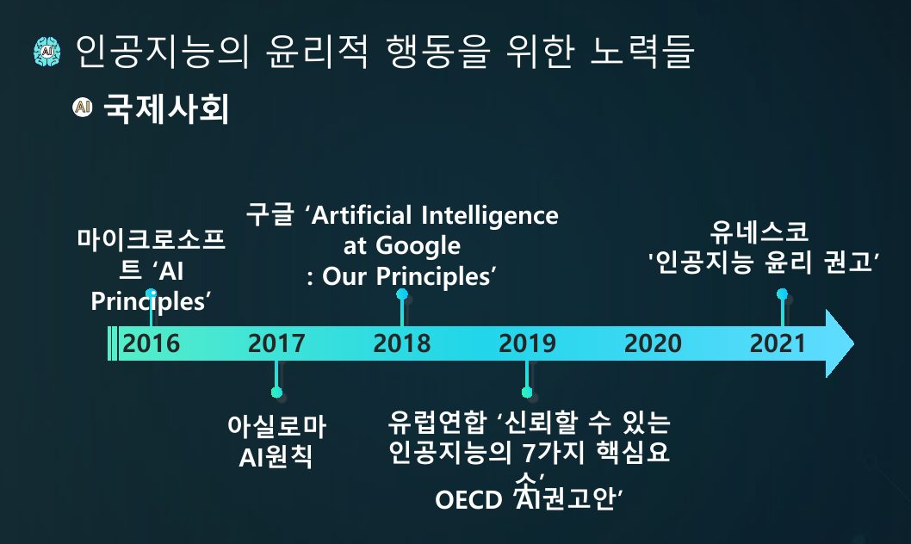
국제사회의 AI 윤리 노력 타임라인
연도
국제사회
2016
마이크로소프트 'AI Principles'
2017
아실로마 AI 원칙
2018
구글 'Artificial Intelligence at Google: Our Principles'
2019
유럽연합 '신뢰할 수 있는 AI의 7가지 핵심요소', OECD 'AI 권고안'
2021
유네스코 '인공지능 윤리 권고'
암기팁 국제 타임라인 = "MS → 아실로마 → 구글 → EU·OECD → 유네스코" (16·17·18·19·21)
"마이크로소프트가 아침에 구글링하고 유럽·OECD 거쳐 유네스코로" — 2020은 비어 있음.
아실로마 원칙(Asilomar AI Principles)
AI 개발의 목적·윤리와 가치·중장기 이슈에 대해 개발자가 지켜야 하는 준칙, 총 23개 항. 스티븐 호킹, 레이 커즈와일 등의 서명으로 유명. 목적 = 인류에게 유익한 지능, 초지능은 인류의 이익을 위해서만 개발.
분류
개수
내용
연구 문제
5
유익한 지능 / 유익한 사용을 위한 연구자금 / 연구자·정책 입안자 교류 / 협력·신뢰·투명성 문화 / 개발팀 간 적극 협력
윤리와 가치
13
안전·보안 / 설계자는 도덕적 이해관계자 / 인간 존엄성과 공존 / 개인정보 보호 / 프로세스 존중·개선 / 치명적 자율 무기 경쟁 방지 등
장기적 문제
5
AI 역량에 대한 주의 / 계획과 관리 / 위험 관리 / 엄격한 안전 관리·통제 / 초지능의 공공성
암기팁 아실로마 = "5 · 13 · 5 = 23"
가운데(윤리와 가치)만 13, 양 끝은 5. 샌드위치 구조.
유네스코 '인공지능 윤리 권고'
최초의 '세계적 AI 표준' 지침. 제41차 총회에서 141개 항목의 권고를 193개 회원국 만장일치 채택. AHEG(Ad Hoc Expert Group) 구성 1년 9개월 만에 채택.
구속력: 국제법인 협약보다 약하지만 선언보다 강한 지침.
핵심: AI가 인권이나 기본적 자유를 침해해선 안 된다 + 건전한 발전을 위한 가치·원칙.
주요 내용
설명
데이터 보호 강화
현재 이상의 개인정보 보호 조치 요구, 개인이 자기 데이터 기록에 접근하거나 삭제할 수 있어야 함
사회적 점수 평가 및 대량 감시 금지
이를 위한 AI 사용을 명시적으로 금지(인권·자유 침해)
모니터링 및 평가 지원
윤리적 영향 평가(개인·사회·환경 영향), 국가 제도 역량 강화, 독립적인 AI 윤리 책임자 또는 감사·모니터링 메커니즘 권장
환경보호
기후 변화 대응, 데이터·에너지·자원 효율적인 AI 우선
암기팁 유네스코 숫자 = "41차 · 141항목 · 193개국 · 1년 9개월"
41과 141이 짝, 193개국 만장일치. 금지 항목은 "사회 점수 매기기 + 대량 감시" 두 가지.
셀프 체크 10주차 셀프 체크
특이점에서 일어나는 현상은?
지능의 폭발(Intelligence explosion)
'지능의 폭발'을 언급한 사람과 연도는?
어빙 굿, 1965
커즈와일의 책·출판연도·예측 시점은?
『특이점이 온다』, 2005, 2045년
유드코우스키가 말한 특이점 시작 연도와 근거는?
1996년, 컴퓨터 속도 2년마다 2배(무어의 법칙)
특이점 비판 측 인물은?
핀커, 캐플런 등, 신학자들
스튜어트 러셀이 이의를 제기한 대상은?
표준적인 모형(인간이 준 목표를 기계가 최적화)
테이와 이루다는 각각 며칠 만에 중단?
테이 하루, 이루다 약 2주
편향성의 두 종류는?
선택 편향(지리적 편향 등), 확인 편향
카카오 윤리헌장의 날짜와 5원칙은?
2018.01.31 / 기본원칙·차별 경계·학습 데이터 운영·알고리즘 독립성·알고리즘 설명
네이버가 적용한 원칙은?
Privacy By Design
방통위 원칙 발표일은?
2019.11.11
아실로마 원칙 연도·총 항목·구성은?
2017, 23개(연구 5 + 윤리·가치 13 + 장기 5)
유네스코 권고가 명시적으로 금지한 것은?
사회적 점수 평가와 대량 감시를 위한 AI 사용
유네스코 권고의 구속력은?
협약보다 약하고 선언보다 강함
12주차 — 선형회귀 모델링과 경사하강법
12-1. 선형회귀 모델링
예시 공부한 시간과 성적 (12주 전체에서 계속 쓰임)
공부한 시간 x
2시간
4시간
6시간
8시간
성적 y
81점
93점
91점
97점
x = {2, 4, 6, 8}, y = {81, 93, 91, 97}. "공부 시간이 많으면 성적이 좋을 것이다"라는 관계를 직선의 방정식으로 표현.
선형회귀 = 입력(x)과 출력(y) 사이의 선형적인 관계를 찾는 것: y = ax + b (a = 기울기, b = y절편).
활용: 가정 a=3, b=76 → y = 3x + 76 → 5시간 공부하면 3×5+76 = 91점 예측.
모델 학습에 필요한 것: ① Loss(Cost) 함수 ② 최적화(loss를 최소화하는 a, b 찾기).
예측의 정확도
데이터를 가장 잘 대표하는 직선을 찾아야 함. 직선 (1)(2)(3) 중엔 눈으로 (2)번이 정확 → 그러나 (4)(5)(6)처럼 비슷한 직선끼리는 정량적(수치적) 판단기준 필요 → 기울기 a와 절편 b로 구별.
오차 = 실제 y값과 직선의 y값의 차이. 오차 계산 = 예측값 − 실제값. 예: x=4에서 예측 88, 실제 93 → 오차 88 − 93 = −5.
기울기를 너무 크거나 작게 잡으면 오차가 커짐(기울기가 무한대면 오차도 무한대). → "정확한 직선 = 정확한 모델링 = 오차가 작은 직선 = 오차가 작은 a, b".
전반적 정보 확인(info): Range Index 768 entries(0~767), 속성별 768개 non-null. 속성 9개 = Pregnant, Plasma, Pressure, Thickness, Insulin, BMI·Pedigree(float64), Age, Class(나머지 int64) → float64(2), int64(7), 메모리 54.1KB.
자세한 정보 확인(describe): count·mean·std·min·25%·50%·75%·max → 전체적인 데이터 값의 분포를 짐작.
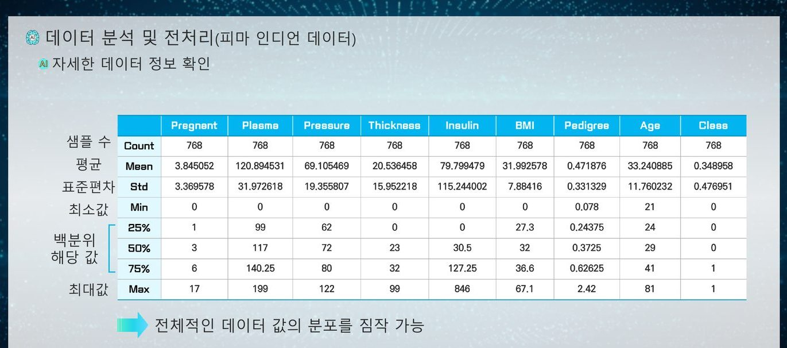
describe() 결과 — 샘플 수·평균·표준편차·최소·백분위·최대
Pregnant
Plasma
Pressure
Thickness
Insulin
BMI
Pedigree
Age
Class
Mean
3.85
120.89
69.11
20.54
79.80
31.99
0.47
33.24
0.35
Min
0
0
0
0
0
0
0.078
21
0
50%
3
117
72
23
30.5
32
0.3725
29
0
Max
17
199
122
99
846
67.1
2.42
81
1
값의 범위가 다른 문제: 특징 A가 −10,000~10,000, 특징 B가 −0.1~0.1이면 가공 없이 넣을 때 '최적의 값'을 찾는 과정에 악영향(A가 과도하게 중요하게 취급됨) → 전처리로 영향력 조정.
데이터 시각화
분석 결과를 쉽게 이해하도록 시각적으로 표현·전달. 데이터가 많을 때 특징 파악에 좋음.
두 속성 간 상관관계(히트맵): 가로·세로에 같은 속성 9가지, 교차점 = 상관관계, 대각선 = 1(자기 자신).
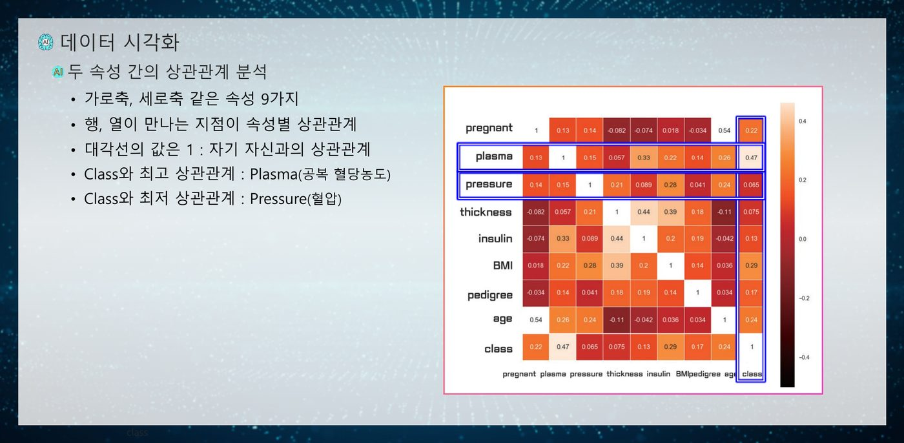
피마 인디언 상관관계 히트맵 — class 열을 보면 plasma가 가장 진하고 pressure가 가장 연하다
Class와의 상관계수
Pregnant
Plasma
Pressure
Thickness
Insulin
BMI
Pedigree
Age
값
0.22
0.47 (최고)
0.065 (최저)
0.075
0.13
0.29
0.17
0.24
→ 최고 = Plasma(공복 혈당농도), 최저 = Pressure(혈압). 그래서 Plasma & Class(공복 혈당농도와 당뇨의 관계)를 따로 시각화.
암기팁 "혈당은 당뇨와 절친, 혈압은 남남"
Plasma(혈당) 0.47 최고, Pressure(혈압) 0.065 최저 — 둘 다 P로 시작해서 헷갈리니 "혈당 = 당뇨"로 연결. 데이터 숫자 768명 · 8+1 · 60% 당뇨 · 80% 비만 · 1950년대 0명.
XAI와 시각화: 딥러닝은 결과 이유를 설명하지 못해 신뢰성 저하 → 결과의 이유를 시각적으로 제시. 예: 유방암 예측 p(Cancer)=0.70, p(No Cancer)=0.30과 함께 어떤 특징(worst area 1210.00, worst perimeter 127.10, mean radius 17.85 등)이 얼마나 기여했는지 막대로 표시.